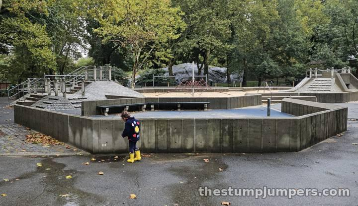
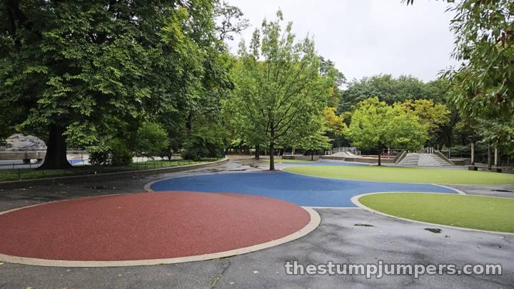
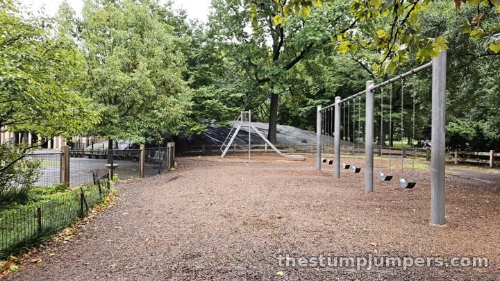
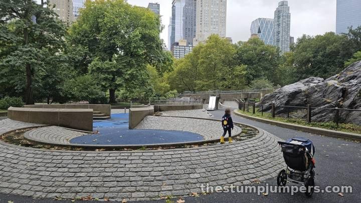
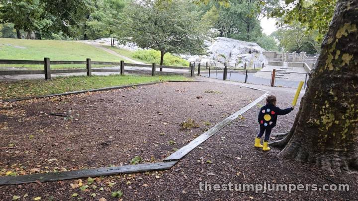
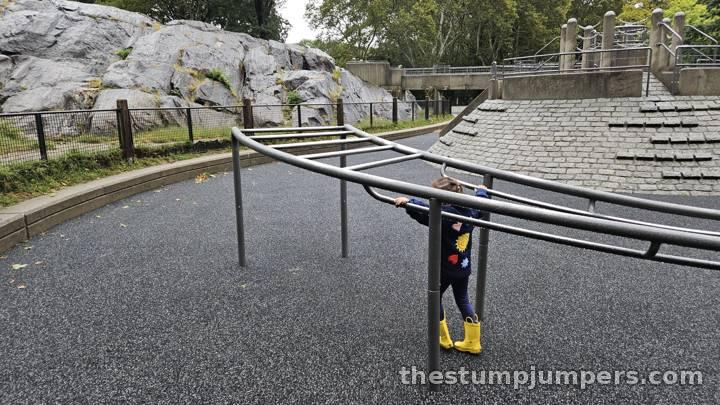

The OG, but Not Necessarily the GOAT: Heckscher Playground

Heckscher is the OG, but not necessarily the GOAT. Known simply as “The Heck,” it's Central Park's oldest playground, opened in 1926, and at 1.8 acres, its largest. For my circle of parents, it's the default place for families to meet up. Everyone knows where it is, and everyone can find a spot.


The highlight is the castle-like stone structures with a little stream running through them. Following the stream from the drain all the way up to its source on Umpire Rock is fun for everyone, grown-ups included. You can even follow the stone causeway right up onto Umpire Rock itself, but I wouldn't recommend it for kids: there's usually broken glass up there from people drinking.


For some reason, my daughter's favorite part of this entire playground is a sewer drain just outside the sandbox. You can see water down below, and she'll stare into the abyss for ten minutes at a time. I wonder what she sees down there. Or what sees her.


Now for why we usually avoid it. Its central location in a very touristy area means it gets visited by all kinds of riff-raff. Even though it's huge, it's normally pretty darn busy, and for some reason it attracts the kind of crowd that plays music out loud from their phones and leaves Dorito bags behind. During the week, it's full of nannies letting kids romp around. Keep an eye out, too: there are a few entrances and exits that kids can sneak out of. The bathrooms are attached to the playground, but they're shared with everyone in the park, so they can be pretty scuzzy.
Our most recent visit was a rainy Saturday in September, and the whole place was completely deserted, which was both fun and eerie. Verdict: still very much worth visiting for its sheer size and the view of the skyscrapers along Billionaires' Row. Just go on an off day if you can.
The Stump Report
Biking & Running There
On the run: easy to reach from any Central Park loop run; it's near the park's south end. By bike: the loop drive runs right past. By train: N, Q, R, or W to 57 St–7 Av, the F to 57 St, or A, B, C, D, or 1 to 59 St–Columbus Circle, then enter the park near Seventh Avenue.